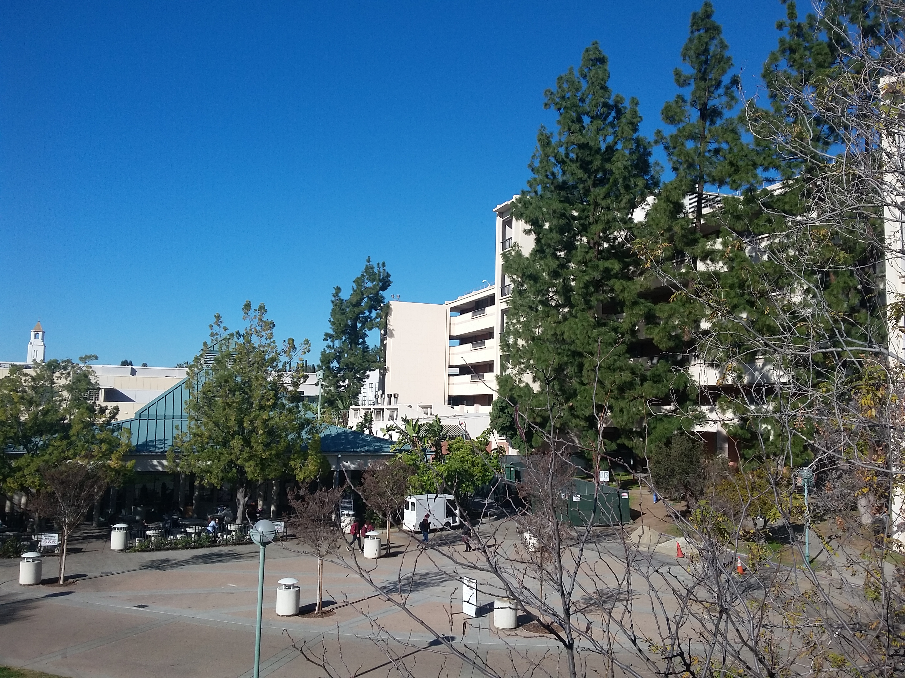
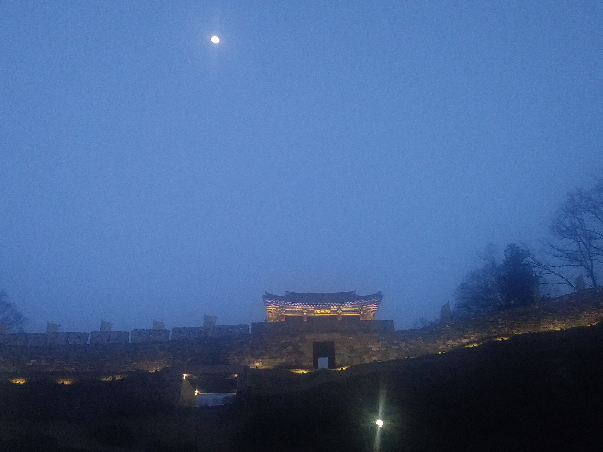

Welcome to my Web Page!
Born and raised in Los Angeles, CA, I am a recent Statistics graduate from the University of California, Los Angeles.
Before studying there, I completed my preliminary coursework at Pasadena City College in nearby Pasadena, CA. I'm interested in
unearthing the underlying nature of data and creating visualizations that can be understood by everyone. I also enjoy learning
new technologies and have been completing Computer Science prerequisites for a future degree in the intersection of CS and Stats. One
last note: I'm a huge proponent of education, namely community colleges and the impact they provide.
When I do decide to use my spare time more leisurely, I'm usually watching some show/film/animation, reading, drawing, or attempting to exercise.
I would also be traveling more frequently if I could!
Current learning goals: Tableau and finishing my website using HTML/CSS/JS.
My Picture Gallery

Taken at Pasadena City College. The R Building is in the background. It houses the Math and CS department. Probably spent most of my 5 years there.

Taken at Gongju Province, South Korea. This is the Gongju Gongsanseong Fortress by the Geumgang River.

Taken at JPL, La Cañada Flintridge. I was a participant in the National Aerospace Scholars Program. Got to meet other community college students and work as a team. Interesting experience and Team Navy Blue won. ;)